Vasundhra
Texture Synthesis and Transfer
The goal of this project was to explore some texture synthesis and transfer techniques.
Overview
Texture synthesis is the creation of a larger texture image from a small sample. Texture transfer is giving an object the appearance of having the same texture as a sample while preserving its basic shape. For texture synthesis, the main idea is to sample patches and lay them down in overlapping patterns, such that the overlapping regions are similar. Texture transfer is achieved by encouraging sampled patches to have similar appearance to a given target image, as well as matching overlapping regions of already sampled patches. This project uses important techniques such as template matching, finding seams, and masking.
Texture Synthesis
Overlapping Patches
The first implementation here utilizes overlapping patches. We start with a random patch for the top left corner of the image. Then, we calcute the SSD (Squared Sum Difference) of the overlapping regions with every possible patch in the sample. The new patch is then selected randomly from N (N = 4 in this case) patches with the lowest SSD cost. For the following result, I used a sample image with input_size=300x300 to produce an output image of size=500x500 using patches of size=31x31. There was overlap of 11 pixels. The result is pretty good, however we still some vertical lines in the image.
Input Sample
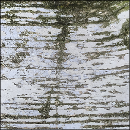Output Texture
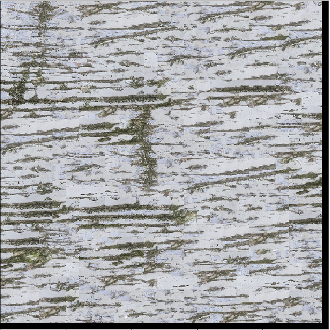Seam Finding
The seam finding method is implemented here to improve the result from the overlapping patches. Here, in addition to overlapping patches, I find the minumum cost path through the SSD (Squared Sum Difference) image of the patch to decide which pixels come from the output (overlapping portion from the existing patch) vs the selected patch (overlapping portion from the new patch). Below, I will explain the details of this method.
First, the SSD cost of the output (existing patch to be overlapped) is calculated and a patch with low SSD is selected.
Overlapping region in output:
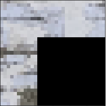Selected Patch:
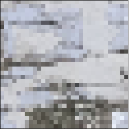We then get the vertical and horizontal ssd_cost between the selected patch and output patch.
Vertical SSD:
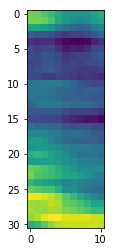Horizontal SSD:
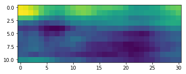Using these two ssd_costs, we first find the vertical and horizontal cut_masks and then combine the two.
Vertical Mask:
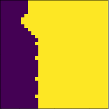Horizontal Mask:
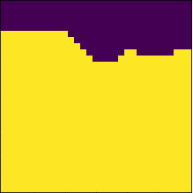Combined Mask:
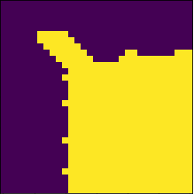Then we perform the cut on the output patch and selected patch and combine the two to create the new patch
Output Patch:
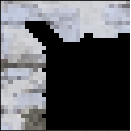Selected Patch:
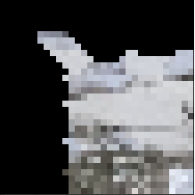Combined Patch:
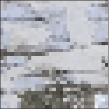The resulting image using this method for each patch in the output is as follows:
Input Sample
Output Texture
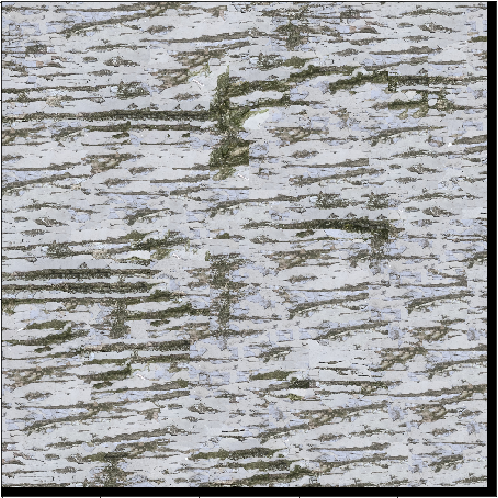Texture Transfer
Here, I implement texture transfer using the seam finding method described above. In addition to the ssd_cost for the overlapping region, the ssd_cost between the sample texture and a patch in the target guidance image at the same location as we are writing to in the output image is also included. This additional cost ensures that we select patches that are similar in intensity to the target image. The total ssd_cost is calculated using the equation:
ssd_cost = alpha*(ssd_cost_overlap) + (1-alpha)*(ssd_cost_guidance)
For the following result, a patch_size of 25x25 and an overlap of 11 pixels was used. The patch with the lowest ssd_cost was always chosen. The alpha was set to 0.25.